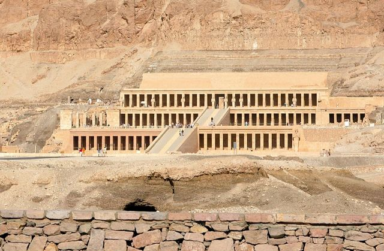
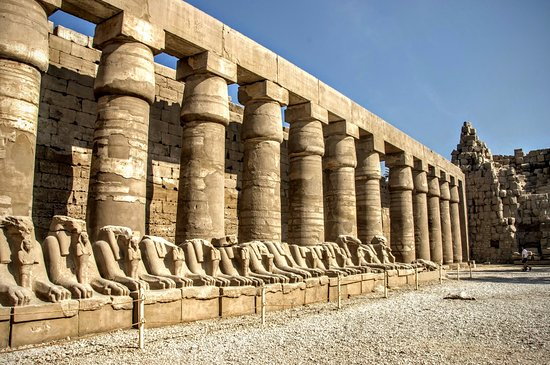
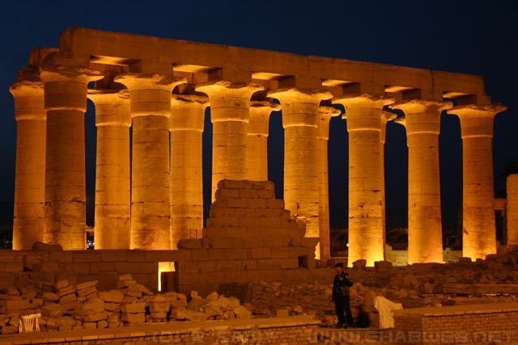
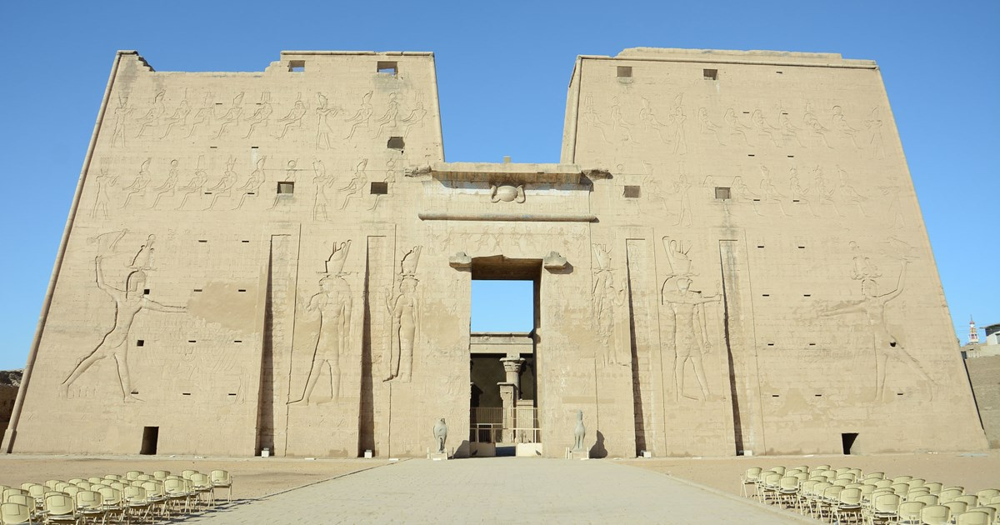
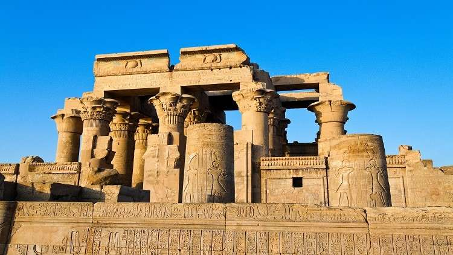

المعابد المصرية القديمة كانت أكثر من مجرد مبانٍ للعبادة. كانت مراكز دينية، ثقافية، واجتماعية تُظهر تقديس المصريين القدماء للآلهة والحياة بعد الموت. الدور الرئيسي للمعابد هو عبادة الآلهة وإقامة الطقوس اليومية التي تضمن توازن الكون، كما كانت مراكز تعليمية ومستودعات للعلم والمعرفة، حيث كان الكهنة يتعلمون الفلك، الطب، والكتابة. كما كانت المعابد تدير أراضي زراعية، وتوظف عدد كبير من العمال والحرفيين، وتمثل ثروة اقتصادية مهمة للدولة.

بنيت بجانب المقابر الملكية أو الأهرامات. الغرض منها تقديم القرابين للملك بعد الموت والاحتفال بالطقوس الجنائزية. أمثلة: معبد حتشبسوت بالدير البحري (الأسرة 18)، معبد منتوحتب (وادي الملوك، الأسرة 11).

معابد عامة تقام فيها الاحتفالات الكبرى مثل عيد الأوبت. أمثلة: معبد الكرنك بالأقصر (الأسرة 12 – توسع في الأسرة 18)، معبد الأقصر (الأسرة 18).

تخدم سكان منطقة معينة أو قرية صغيرة. أمثلة: معبد إدفو (الأسرة البطلمية)، معبد كوم أمبو (الأسرة البطلمية).
مدخل ضخم يشبه الأبواب المقوسة، يرمز إلى عبور الزائر من العالم الخارجي إلى المقدس.
ساحة كبيرة للطقوس العامة والاحتفالات، محاطة بأعمدة زخرفية.
أعمدة ضخمة تحمل سقف المعابد الداخلية. مثال: قاعة الأعمدة في الكرنك بها 134 عمود.
أقدس مكان في المعبد، المخصص للتمثال الإلهي.
جدران المعابد مليئة بالنقوش التي تصور الأساطير، الطقوس، والملوك. استخدام الألوان الطبيعية الثابتة على مدى آلاف السنين.

الموقع: الأقصر، شرق النيل. العصر: الأسرة 12 بدأ البناء، توسع في الأسرة 18 و19. أكبر مجمع ديني في العالم القديم، قاعة الأعمدة الضخمة، بحيرة المقدسة.

الموقع: الأقصر، بالقرب من الكرنك. العصر: الأسرة 18، عهد أمنحتب الثالث ورمسيس الثاني. تماثيل ضخمة للملوك، بقايا الأعمدة المزخرفة، واجهة حجرية رائعة.

الموقع: وادي الملكات. العصر: الأسرة 18. تصميم مدرج، أعمدة زخرفية، منحوتات الملكة حتشبسوت في أدوار متعددة.

الموقع: إدفو، النوبة العليا. العصر: الأسرة البطلمية. أطول معبد محفوظ من العصر البطلمي، مزخرف برموز الإله حورس.

الموقع: النوبة العليا، على نهر النيل. العصر: الأسرة البطلمية. معبد مزدوج للإلهين حورس وسوبك، تصميم متماثل.
المعابد المصرية القديمة ليست مجرد حجارة، بل رمز للديانة، الفن، والهندسة. كل معبد كان مركز حياة دينية، اجتماعية، وتعليمية. من دراسة المعابد نستفيد بفهم العقيدة المصرية القديمة، الفن، وتقنيات البناء المتقدمة. إنها رسالة حضارية خالدة تعلمنا كيف دمج الفن بالدين والهندسة في خدمة المجتمع.